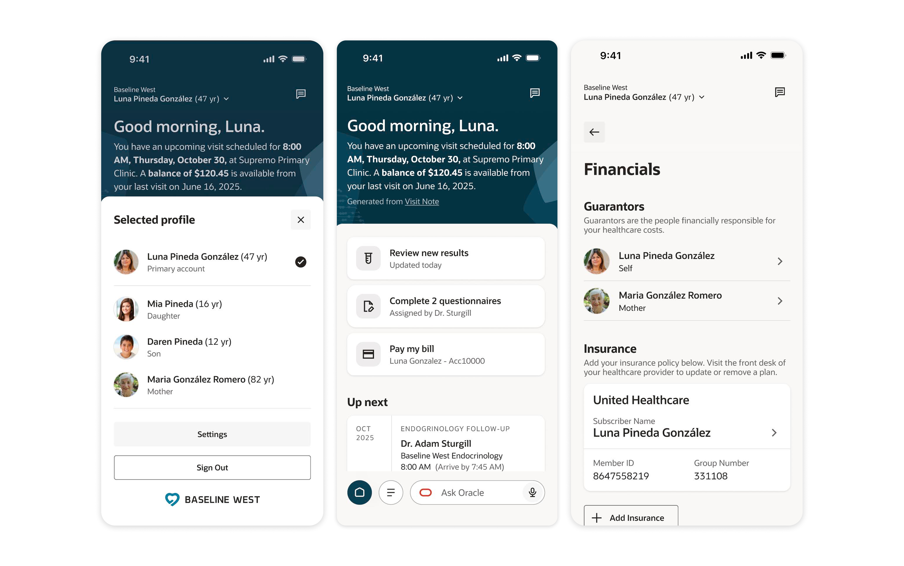

Oct 2025 – Present
4 months to GA
UX Designer II
Oracle Health Design
Product Strategy
Interaction Design
Systems Thinking
Figma
Codex & VSCode
After my recruitment to this new project, we made it from 0 to launch in under 4 months! I was responsible for the home dashboard, messaging, and settings/account management. Some highlight of fun problems I owned!
1. Implementing an effective home dashboard and proactive care engine
2. Profile-switching framework for medical proxies
3. Secure messaging with conflicting patient and clinician goals
4. Working closely with dev to ship our brand new design system fast with quality assurance
Sorry, no case study yet :p But please,
Up next: Oracle Patient Portal / Oracle Clinical / Oracle Procurement / Norfolk Southern / Bits of Good / Keeb / Spence